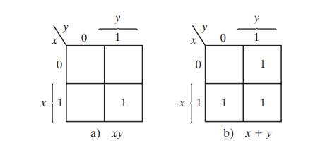
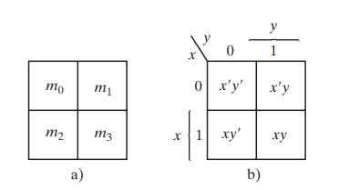

Un mapa de Karnaugh es una representación gráfica de una función booleana. Organiza los valores de verdad en una tabla especial, basada en el código Gray, donde cada celda representa un minitérmino.
Facilita la simplificación lógica al permitir agrupar unos (1s) o ceros (0s) adyacentes.
Mapa de dos Variables


Mapa de tres variables
Hay ocho minitérminos para tres variables binarias; por tanto, el mapa consta de ocho cuadrados.
Los minitérminos no están acomodados en sucesión binaria, sino en una sucesión similar al código Gray, la característica de esta sucesión es que sólo un bit cambia de valor entre dos columnas adyacentes.